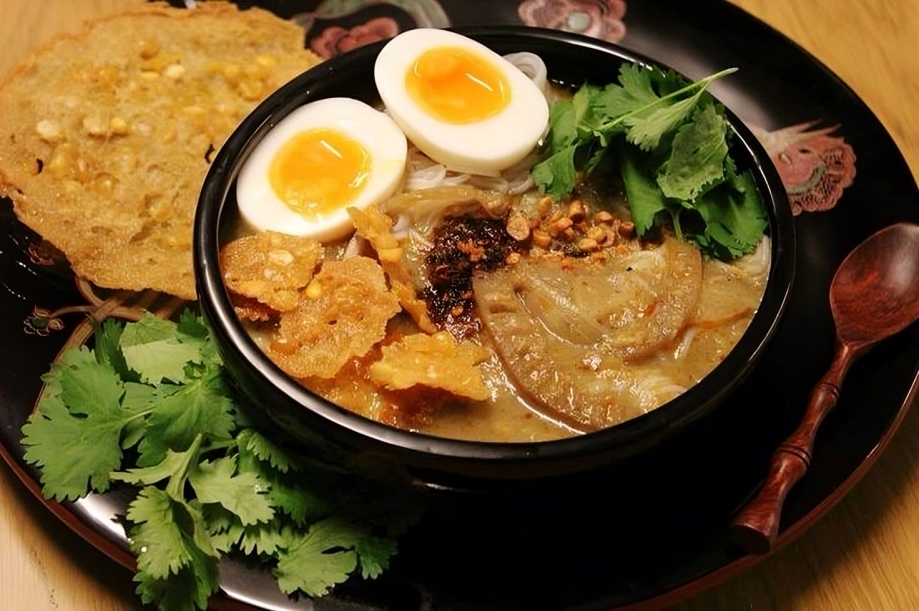
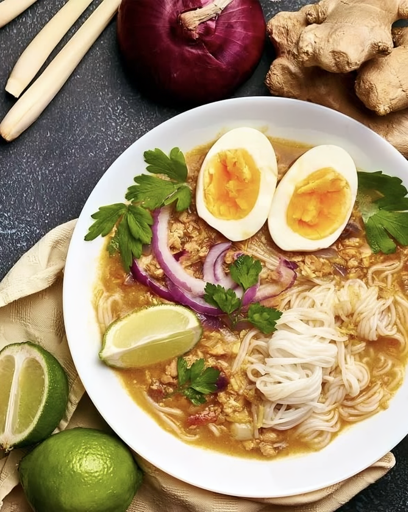
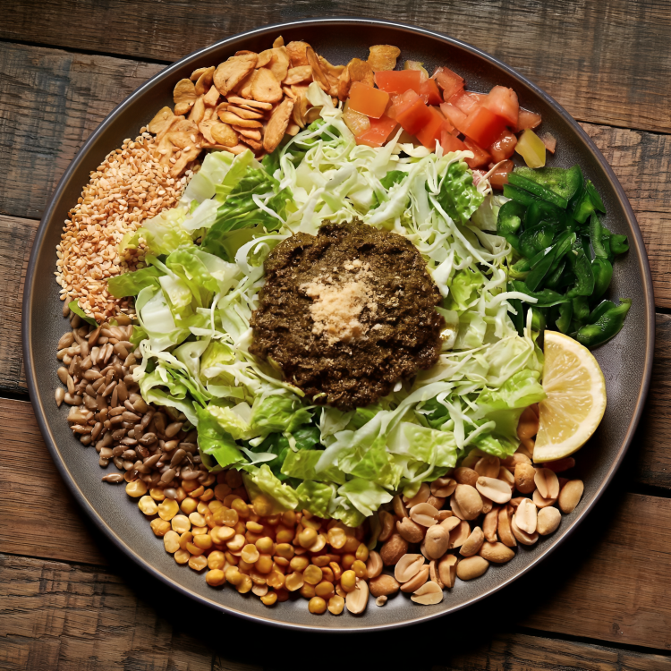
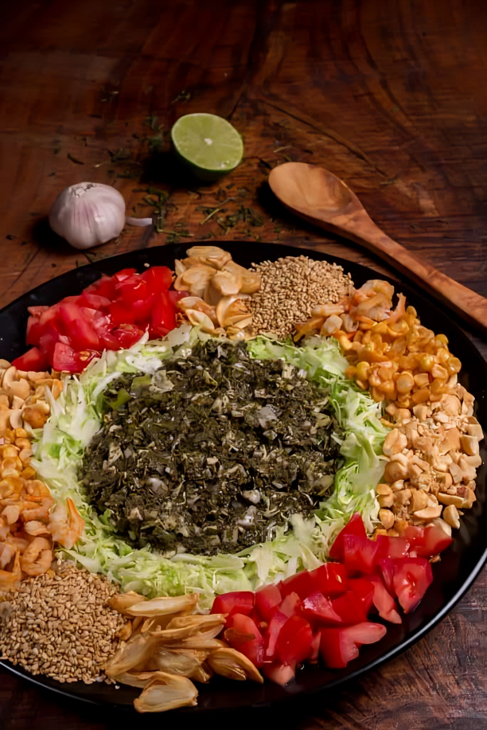
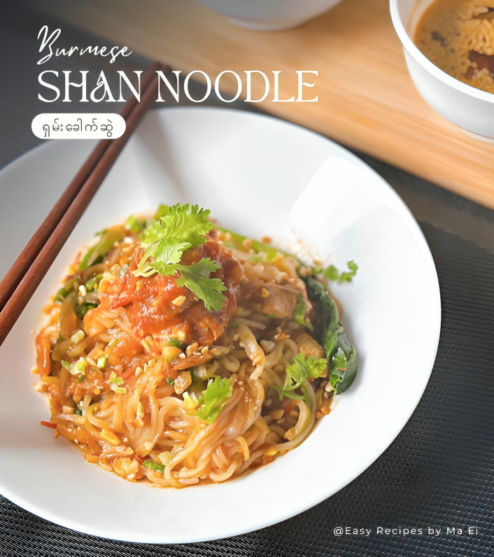
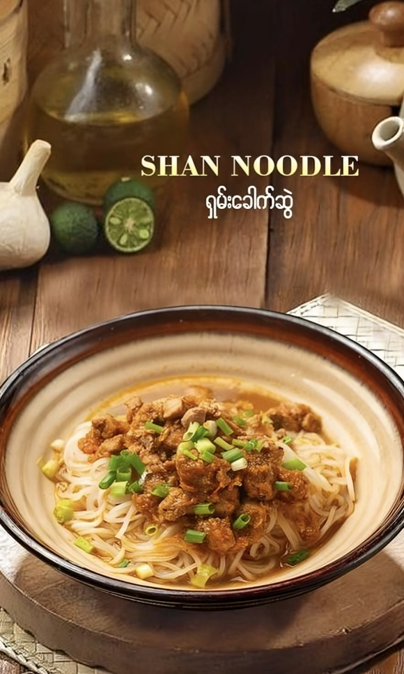

Mohinga (မုန့်ဟင်းခါး)
Mohinga is considered Myanmar’s national dish, traditionally eaten
for breakfast but loved all day long. Historical records trace its
roots back to ancient times when fish was abundant along Myanmar’s
riverbanks. It was a staple in the royal court and common villages
alike — symbolizing unity and simplicity.


Main Ingredients
- Rice noodles
- Catfish (or any freshwater fish)
- Lemongrass, banana stem, ginger, and garlic
- Toasted rice powder (for thickening)
- Boiled eggs
- Crispy fritters and onions for toppings
In Myanmar, Mohinga represents community — it’s served during festivals, religious ceremonies, and street food stalls, reminding people of their shared traditions.
Laphet Thoke (လက်ဖက်သုတ်)
Laphet (fermented tea leaves) has been consumed since ancient
Myanmar kingdoms, especially in Upper Myanmar. Tea leaf fermentation
was both a preservation method and a way to celebrate victory and
social bonding. Offering Laphet was a symbol of friendship and
respect.


Main Ingredients
- Fermented tea leaves
- Roasted peanuts, fried garlic
- Toasted sesame seeds
- Dried shrimp
- Tomatoes, cabbage
- Lime juice and chili
Laphet Thoke is more than food — it’s a symbol of peace offerings, often used in ceremonies to settle disputes and celebrate agreements in the Konbaung dynasty.
Shan Noodles (ရှမ်းခေါက်ဆွဲ)
Shan noodles originate from Shan State, where the Shan ethnic group
resides. The Shan kingdom had trade connections with China and
Thailand, influencing the noodle’s mild, clean, and savory flavor.
It’s a classic example of ethnic diversity in Myanmar food culture.


Main Ingredients
- Rice noodles (flat or round)
- Marinated chicken or pork (with light soy sauce)
- Fried garlic oil
- Pickled mustard greens
- Tomato-based sauce
- Fresh spring onions